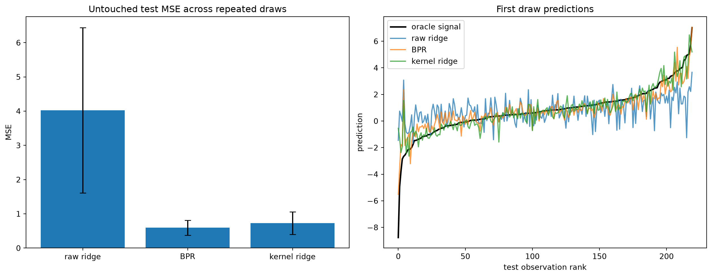

import matplotlib.pyplot as plt
import numpy as np
from crabbymetrics import BaggedPolynomialRegressor, KernelBasis, Ridge
np.set_printoptions(precision=4, suppress=True)Bagged Polynomial Regression
Leakage-free comparison on repeated smooth-signal draws
This example compares raw ridge, bagged polynomial regression, and kernel ridge. Every method receives the same penalty grid. Hyperparameters are selected on validation outcomes, final models are refit on the combined fit and validation sample, and the test outcome is read exactly once per repeated draw.
1 Imports
2 Repeated train, validation, and test experiment
penalties = np.logspace(-2, 1, 6)
n_repetitions = 5
p = 10
def mse(y, prediction):
return float(np.mean((y - prediction) ** 2))
def signal(x):
return (
1.0
+ 0.9 * x[:, 0] * x[:, 1]
- 0.7 * x[:, 2] ** 2
+ 0.5 * np.sin(x[:, 3])
+ 0.4 * x[:, 4]
)
def standardize_from_fit(x_fit, *others):
center = x_fit.mean(axis=0)
scale = x_fit.std(axis=0)
scale[scale == 0.0] = 1.0
return ((x_fit - center) / scale,) + tuple((x - center) / scale for x in others)
records = []
for repetition in range(n_repetitions):
rng = np.random.default_rng(20260710 + repetition)
loadings = rng.normal(scale=0.6, size=(4, p))
def sample_x(n):
latent = rng.normal(size=(n, 4))
return latent @ loadings + 0.5 * rng.normal(size=(n, p))
x_fit_raw = sample_x(360)
x_validation_raw = sample_x(120)
x_test_raw = sample_x(220)
y_fit = signal(x_fit_raw) + rng.normal(scale=0.35, size=x_fit_raw.shape[0])
y_validation = signal(x_validation_raw) + rng.normal(
scale=0.35, size=x_validation_raw.shape[0]
)
y_test = signal(x_test_raw) + rng.normal(scale=0.35, size=x_test_raw.shape[0])
x_fit, x_validation, x_test = standardize_from_fit(
x_fit_raw, x_validation_raw, x_test_raw
)
x_combined = np.vstack([x_fit, x_validation])
y_combined = np.r_[y_fit, y_validation]
raw_validation = []
for penalty in penalties:
candidate = Ridge(penalty=float(penalty))
candidate.fit(x_fit, y_fit)
raw_validation.append(mse(y_validation, candidate.predict(x_validation)))
raw_penalty = float(penalties[int(np.argmin(raw_validation))])
raw_final = Ridge(penalty=raw_penalty)
raw_final.fit(x_combined, y_combined)
bpr_validation = []
for penalty in penalties:
candidate = BaggedPolynomialRegressor(
n_estimators=20,
degree=2,
max_features=6,
max_samples=300,
bootstrap=True,
penalty=float(penalty),
seed=1000 + repetition,
)
candidate.fit(x_fit, y_fit)
bpr_validation.append(mse(y_validation, candidate.predict(x_validation)))
bpr_penalty = float(penalties[int(np.argmin(bpr_validation))])
bpr_final = BaggedPolynomialRegressor(
n_estimators=40,
degree=2,
max_features=6,
max_samples=400,
bootstrap=True,
penalty=bpr_penalty,
seed=2000 + repetition,
)
bpr_final.fit(x_combined, y_combined)
anchor_idx = np.sort(rng.choice(x_fit.shape[0], size=160, replace=False))
kernel = KernelBasis("gaussian", bandwidth=12.0)
kernel.fit(x_fit[anchor_idx])
kernel_fit = kernel.transform(x_fit)
kernel_validation = kernel.transform(x_validation)
kernel_combined = kernel.transform(x_combined)
kernel_test = kernel.transform(x_test)
kernel_validation_mse = []
for penalty in penalties:
candidate = Ridge(penalty=float(penalty))
candidate.fit(kernel_fit, y_fit)
kernel_validation_mse.append(
mse(y_validation, candidate.predict(kernel_validation))
)
kernel_penalty = float(penalties[int(np.argmin(kernel_validation_mse))])
kernel_final = Ridge(penalty=kernel_penalty)
kernel_final.fit(kernel_combined, y_combined)
test_predictions = {
"raw ridge": raw_final.predict(x_test),
"BPR": bpr_final.predict(x_test),
"kernel ridge": kernel_final.predict(kernel_test),
}
for method, prediction in test_predictions.items():
records.append(
{
"repetition": repetition,
"method": method,
"test_mse": mse(y_test, prediction),
}
)
if repetition == 0:
first_draw = {
"truth": signal(x_test_raw),
"predictions": test_predictions,
"bpr_summary": bpr_final.summary(),
"selected_penalties": {
"raw ridge": raw_penalty,
"BPR": bpr_penalty,
"kernel ridge": kernel_penalty,
},
}3 Results
methods = ["raw ridge", "BPR", "kernel ridge"]
scores = {
method: np.array([row["test_mse"] for row in records if row["method"] == method])
for method in methods
}
for method in methods:
print(
method,
{
"mean_test_mse": round(float(scores[method].mean()), 4),
"sd_test_mse": round(float(scores[method].std(ddof=1)), 4),
},
)
print("first-draw selected penalties:", first_draw["selected_penalties"])
print(
"first-draw BPR OOB diagnostics:",
{
"oob_mse": round(first_draw["bpr_summary"]["oob_mse"], 4),
"oob_coverage": round(first_draw["bpr_summary"]["oob_coverage"], 4),
},
)raw ridge {'mean_test_mse': 4.0254, 'sd_test_mse': 2.4115}
BPR {'mean_test_mse': 0.5949, 'sd_test_mse': 0.2195}
kernel ridge {'mean_test_mse': 0.7277, 'sd_test_mse': 0.3321}
first-draw selected penalties: {'raw ridge': 10.0, 'BPR': 0.01, 'kernel ridge': 0.01}
first-draw BPR OOB diagnostics: {'oob_mse': 0.5786, 'oob_coverage': 1.0}fig, axes = plt.subplots(1, 2, figsize=(13, 5), constrained_layout=True)
means = [scores[method].mean() for method in methods]
standard_deviations = [scores[method].std(ddof=1) for method in methods]
axes[0].bar(methods, means, yerr=standard_deviations, capsize=4)
axes[0].set_title("Untouched test MSE across repeated draws")
axes[0].set_ylabel("MSE")
order = np.argsort(first_draw["truth"])
axes[1].plot(first_draw["truth"][order], color="black", lw=2, label="oracle signal")
for method, prediction in first_draw["predictions"].items():
axes[1].plot(prediction[order], alpha=0.75, label=method)
axes[1].set_title("First draw predictions")
axes[1].set_xlabel("test observation rank")
axes[1].set_ylabel("prediction")
axes[1].legend()
plt.show()
The comparison is prediction-focused. BPR exposes no coefficient standard errors; its OOB values are model diagnostics, not confidence intervals.